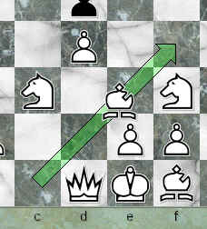

|
|
jose 1.4.1 |
|

Choose the appearance of the pieces on The Board Panel .
For installing new fonts refer to ???.
Choose the operation mode when you insert a new variation ( Variations ).
The last two options are not really useful when applied automatically. If in doubt, choose Ask.
Set the speed of sliding pieces. The Animation Dialog
If this option is checked, animated moves will be indicated with a green arrow, like this:

|
|
© 2002-2006 jose-chess.sourceforge.net |
|